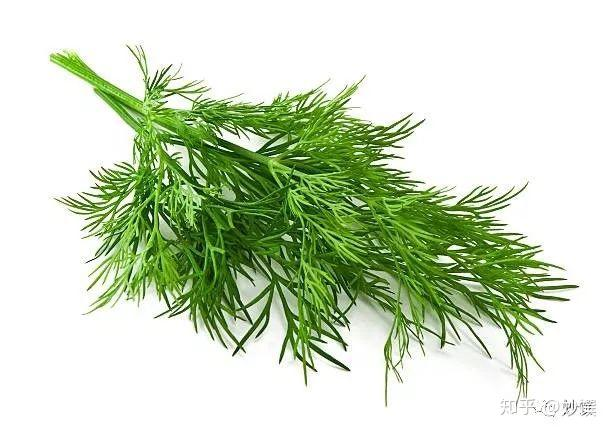
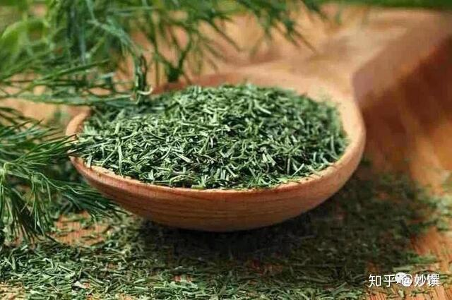
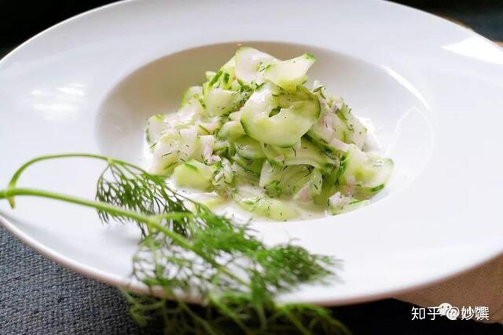

这货不是小茴香这货不是小茴香
不是小茴香…
莳萝很像中国北方的包饺子用的茴香，所以又叫“洋茴香”。它的气味香甜，香而不刺激，闻着能舒缓情绪，比小茴香温和。英文名也是这么来的，dill有平静，镇定，安慰之意。
莳萝长得很有仙气，叶子是羽毛状一丝一丝的，特别轻盈。它有“鱼之香草”的美誉。欧洲人做鱼常用到莳萝，就跟中国人做鱼要放姜去腥一样。尤其是烹调三文鱼，那几乎是一对拆不开的鸳鸯。

▲ 新鲜莳萝，图源自网络。

▲ 风干莳萝
气味：温和不刺激，清香甘甜，淡香料味。
回顾：
coffee cat 的晚餐：德国传统黄瓜莳萝沙拉

▲ 很柔和的口感，之后会上这个食谱。
应用：烹调鱼虾贝类，和三文鱼尤其搭；黄瓜沙拉；酸奶酱和沙拉酱。